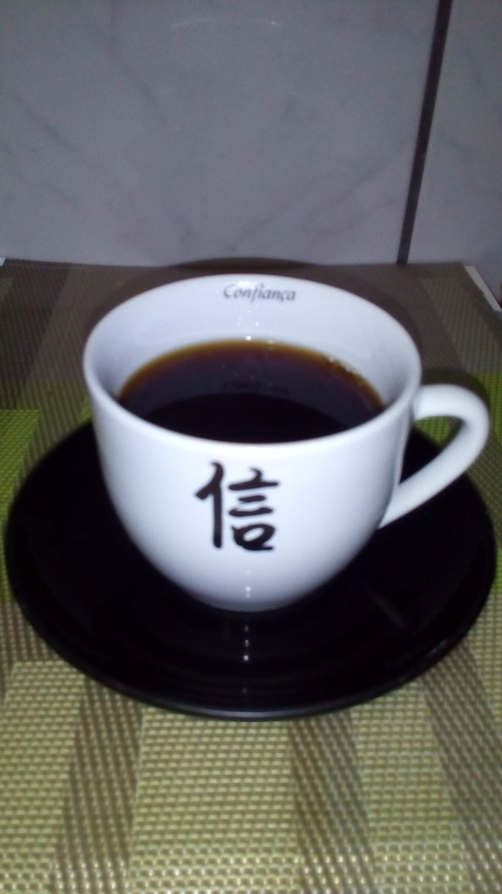

Como o Persona 5 Despertou Meu Interesse pelo Mundo do Café
- Ver esta página em:
- English
- 日本語
- Português


Acessibilidade, áudio, jogos, Linux e outras coisas, do ponto de vista de uma deficiente visual.
Não é a primeira vez que um jogo da série Persona me faz ir atrás de aprender algo novo. O jogo Persona 3 já me fez tentar preparar lámen apesar de culinária não ser a minha praia. Agora, foi a vez do Persona 5.
No Persona 5, enquanto age como um estudante normal durante o dia e luta contra injustiça e adultos corruptos durante a noite, o jovem protagonista é obrigado a morar no sótão de uma cafeteria, e uma das atividades que rendem itens para as missões é aprender a preparar uma boa xícara de café. Mas não é qualquer café!
Às vezes, quando o protagonista prepara café, o dono da cafeteria vem experimentar e diz algo como, "Pelo sabor, você usou o grão 'tal', não foi? Deixe-me explicar!" e solta alguma curiosidade sobre determinado grão de café. No meu caso, chegou uma hora que ele parou de dar as curiosidades, então parecia que não ia ter mais. Ele sempre dizia que o café estava sem graça, e achei que essa fosse a única resposta possível. Então, eu pensei, "Se não tem mais curiosidades e o café nunca vai deixar de ser sem graça mesmo, então pra que perder tempo? A quantidade de dias no jogo é limitada e tem coisas mais importantes pra fazer." E desisti.
Porém, depois descobri que eu estava redondamente enganada, tanto sobre as curiosidades quanto as respostas! Eu deveria ter insistido mais. Pelo jeito, não cheguei a ver nem a metade! O usuário Chapsthedude no Reddit compilou todas (ou se não todas, quase todas) as curiosidades sobre café (em Inglês), e inclusive tem dois cafés brasileiros, o Brasileiro 2/18 (segundo o jogo, também é conhecido como Santos, sendo que o 2 refere-se à qualidade e o 18 ao tamanho do grão) e o Bourbon Brasileiro. Achei muito legal!
Eu sempre gostei de café, mas nunca tinha ido além dos cafés de super mercado (Pilão, Melita etc.) e um espresso em lanchonetes de vez em quando. Antes do Persona 5, eu não fazia ideia de que o mundo do café fosse tão vasto. O jogo me deixou curiosa e resolvi pesquisar. Então, descobri que:
Fiquei curiosa para experimentar alguns desses cafés especiais, mas não conhecia nenhuma cafeteria de verdade (tirando essas lanchonetes de bairro que servem café espresso), então, pra começar, resolvi testar com alguns cafés gourmet moídos para coador que achei no mini mercado Pão de Açúcar aqui perto de casa. Realmente, eles são diferentes do que eu estava acostumada (não se deixe enganar. Mesmo aqueles de cor clara podem ter sabor bem forte!). No geral, gostei! O problema é que não se sabe quando foram torrados e moídos (como esses produtos não devem ter muita saída por serem mais caros do que os cafés mais comuns, não duvido que tenham ficado pelo menos um mês esperando na prateleira da loja!). Como é meio caro (um pacote de café gourmet de 250 gramas é vendido em torno de R$25,00, enquanto um pacote de meio quilo daqueles comuns e mais baratinhos está em torno de R$10,00), eu só me dei o luxo de comprar um pacotinho por mês e tomar só aos fins de semana. Isso aumenta o fator "passagem de tempo depois da torra e da moagem" mais ainda, mas fazer o quê, né?!
Eu queria me adentrar mais no mundo do café, mas venho enrolando a pelo menos meio ano por causa do risco de gostar, ficar muito exigente e não conseguir mais voltar aos cafés comuns, o que significa que poderia sair caro. Estava pensando em comprar um moedor manual de entrada (uns R$200) para poder tomar café moído na hora, e talvez alguma cafeteira diferente como uma Aeropress (também por volta de uns R$200), fora os grãos propriamente ditos...
Ainda não tive coragem de comprar os equipamentos, mesmo porque ainda não consegui experimentar os cafés preparados de diferentes modos, então não tenho referência de tipo de sabor ou método de preparo favorito. Um colega de trabalho me recomendou ir na cafeteria Starbucks, tomar o café do dia e levar os grãos moídos para casa enquanto eu não tiver o moedor. Procurei saber onde era a Starbucks mais próxima e encontrei a do Metrô Santa Cruz (São Paulo/SP, Brasil). Então, uma das minhas metas de quando entrasse de férias era ir lá. E eu finalmente fui!
Meu plano era tomar o café oferecido no dia e levar os grãos do mesmo café para comparar o resultado com o da cafeteira simples aqui de casa... mas não deu certo. Como era a primeira vez, eu me atrapalhei um pouco na hora de pedir, e o atendente também não soube explicar direito, e só me deu a opção de tomar café espresso ou com leite (e parece que só tinha máquina de espresso lá), enquanto os grãos da campanha do dia eram de um café da Papua Nova Guiné. Pra mim, o sabor do espresso estava "no ponto" (teve um espresso que eu tomei em outro lugar que era muito forte e deixava uma sensação não muito agradável na boca). Depois descobri que eles também vendem os grãos do espresso (é uma mistura/blend própria deles que eles chamam de Espresso Roast), mas não tenho máquina de espresso, então não ia servir. Acabei levando o outro mesmo, fazer o quê... pelo menos é certeza que a torra é recente e que acabou de moer!
Foi assim que ficou o café na xícara, depois de passar pela cafeteira simples aqui de casa... (foto própria, tirada no celular)

Achei o sabor bem suave, mas não tenho certeza se consegui identificar os toques herbais mencionados no pacote (tem um gostinho que lembra alguma coisa mas não sei dizer se é disso que o pacote está falando). Eu me pergunto se outros métodos/equipamentos de preparo fariam esses sabores aparecerem um pouco mais. Também experimentei com leite e ficou... interessante. Como se tivesse colocado algo salgado junto com algo doce pra equilibrar (apesar de não ter colocado açúcar nem no café nem no leite). Pelo menos, foi essa a impressão que eu tive. Desculpe, não sei descrever :P . Isso foi o máximo que consegui!
E pra fechar, aqui vai o som do café sendo servido! XD Não que fosse necessário, mas deu na telha de gravar, e gravei. Pelo menos, se eu resolver fazer algum áudio drama de Persona 5 e tiver alguma cena envolvendo café, já tenho de onde tirar o som :P .
(*de repente o chefe aparece*(
"Ah. Pelo sabor, você usou o Guiné PNG, não foi? Deixe-me explicar! O café da Papua Nova Guiné, ou PNG, é produzido na ilha Papua Nova Guiné, que fica a cerca de 150km do norte da Austrália. O café é produzido numa região de difícil acesso, em solos ricos em nutrientes originários de atividades vulcânicas. Produz uma bebida leve e com toques herbais." Pausa. "... Mas você ainda tem muito o que aprender. O seu resultado ainda está insosso. Pode melhorar! Começando pelo equipamento..."
Ugh... ok, vou pensar. Não sei onde eu quero chegar com isso ainda, mas vou continuar insistindo. Vamos ver!
E é mais ou menos assim que acho que a curiosidade poderia ficar se este café estivesse no Persona 5. Em sua maior parte, baseada em informações escritas no pacote.